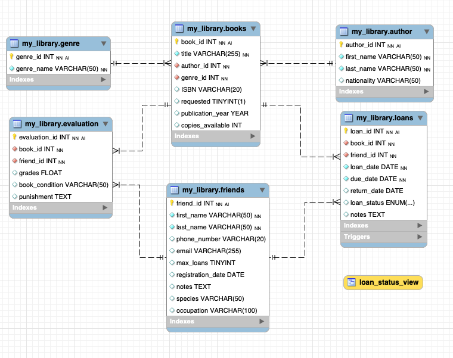
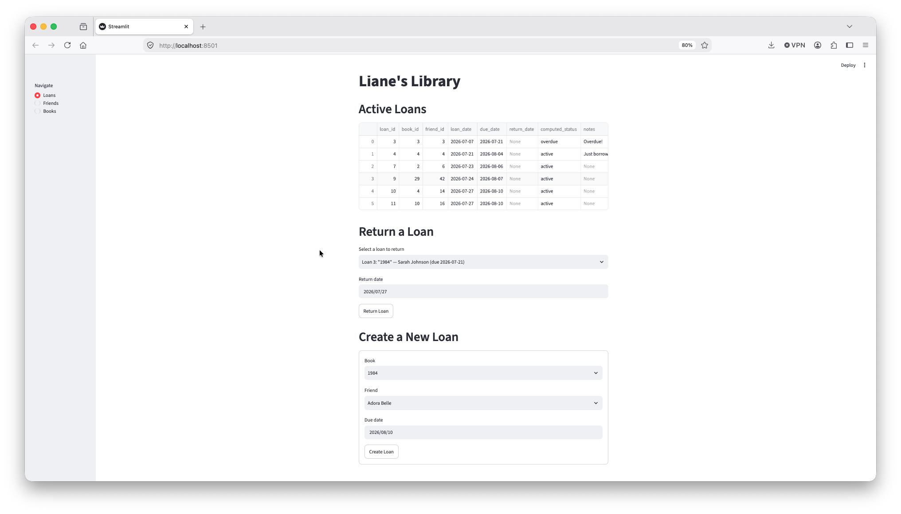
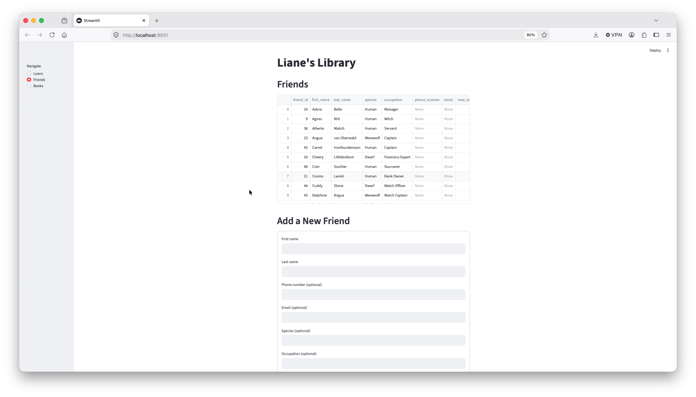

Database Design · Open-Ended Coursework
An open-ended course assignment — design a library database, however you see fit. The first stage was a minimum, functional three-table schema. What it grew into: a normalized six-table design, five real issues diagnosed and fixed after the fact, a fully tested Python CRUD layer, and a Streamlit app on top. A companion project distills the core Python↔SQL mechanics down to their simplest possible form, on their own.
Background
The brief was open: design a library database. No fixed table count, no required stack — just a real problem to solve however seemed right. That freedom turned into two connected projects, each earning its own scope.
Started as a minimum, functional three-table schema — enough to satisfy the open brief on its own. Grew from there into a normalized design that outgrew the minimum by choice: real design mistakes caught and fixed with the reasoning documented, a tested CRUD layer, and a working Streamlit app on top.
A deliberately minimal 3-table, 3-column companion, built to
isolate and teach exactly one thing well: the pandas ↔ MySQL
round trip — to_sql(), read_sql(),
merge() — without any schema complexity competing
for attention.
Workflow
Order turned out to matter more than any individual step.
Engineering
Stage one was the minimum needed to satisfy an open brief: three
tables — Books, Borrowers, Loans
— with basic constraints. Stage two split authors and genres out into
their own normalized tables, and added an evaluation
table for tracking returned-book condition — six tables in total,
each earning its normalization on its own merits rather than being
added by default.
Not every normalization decision went the same way. Genre got a
UNIQUE constraint on its name — a small, controlled
vocabulary where a duplicate is almost always a typo. Author
deliberately did not: two entirely different real people can share a
name, and a hard uniqueness constraint would wrongly block the second,
legitimate one. Consistency for its own sake wasn't the goal —
matching the constraint to what the data actually represents was.
my_library ├── author first_name, last_name, nationality ├── genre genre_name (UNIQUE) ├── books title, author_id, genre_id, ISBN, copies_available ├── friends first_name, last_name, species, occupation, max_loans ├── loans book_id, friend_id, loan_date, due_date, loan_status └── evaluation friend_id, book_id, grades, book_condition, punishment

MySQL Workbench schema diagram, six tables and their relationshipsTooling
14 tested functions, three entities, one shared design pattern.
The most-iterated design decision: how add_book() should
handle authors and genres. Requiring their numeric IDs up front just
moves the "does this author exist yet?" problem onto the caller.
Instead, add_book() takes an author and genre by
name, and internally looks up a matching row — reusing its ID
if found, creating a new one if not.
def add_book(title, author_first_name, author_last_name,
genre_name, ISBN=None, publication_year=None,
copies_available=1):
author_id = get_or_create_author(author_first_name, author_last_name)
genre_id = get_or_create_genre(genre_name)
# ...insert the book with the resolved IDs
update_book() deliberately does not accept
author/genre by name — changing an existing book's author is a
distinct, deliberate action from creating a new book, so it only
accepts raw IDs, never silently creating a new author as a side
effect of an unrelated update.
| Entity | Functions |
|---|---|
| Loans | create_loan, return_loan, get_active_loans, get_book_availability |
| Friends | add_friend, get_friend, update_friend, delete_friend |
| Books | add_book, get_book, update_book, delete_book, plus get_or_create_author / get_or_create_genre |
Business Rules
Every rule enforced twice — once in the database, once in Python — for a different reason each time.
Blocks a duplicate active loan (same book, same friend) no matter what inserts the row — the Python app, a raw SQL statement, or any other tool. A safety net that can't be silently bypassed.
The same rule, checked again in create_loan() before
the trigger ever fires — so the app can raise a specific,
friendly LoanError instead of catching and parsing a
raw SQL exception.
A MySQL-specific trap along the way: the original
UNIQUE KEY (book_id, friend_id) constraint wasn't only
enforcing uniqueness — it was also the only index backing both
foreign keys. Dropping it directly failed with
Error 1553: needed in a foreign key constraint. The fix:
add plain replacement indexes first, then drop the unique one.
| Guard rail | What it stops |
|---|---|
| Out-of-stock check | Loaning a book with copies_available = 0 |
| Duplicate active loan | Same friend borrowing the same book twice while the first loan is still open |
| Double-return | Marking an already-returned loan as returned again |
| Reference-checked deletion | Deleting a friend or book still referenced by loans/evaluation |
Companion Project
3 tables. 3 columns each. One relationship of each kind.
Small enough to hold the whole schema in your head, while still demonstrating a one-to-many relationship (Borrower → Loans) and a many-to-many relationship via a junction table (Books ↔ Borrowers, through Loans) — the two relationship shapes that matter most.
Built as its own repository rather than a folder inside the main
project, so it can be read start to finish in one sitting: flat
DataFrame with repeated data → split into normalized pieces →
to_sql() → read_sql() back for the
auto-generated IDs → merge() to attach foreign keys →
engine.begin() for a direct UPDATE. Every
step documented with the reasoning, not just the code.
Interface
Wired directly to the tested CRUD layer — not a second copy of the logic.

Active Loans table, live in the Streamlit app
Add/Update Friend formRetrospective
DEFAULT CURDATE() fails outright in MySQL —
CURRENT_TIMESTAMP is the only function MySQL
special-cases as a bare default. Any other function call needs
DEFAULT (CURDATE()), parentheses required.
A guessed foreign key name (evaluation_ibfk_1)
silently didn't match the real one
(evaluation_ibfk_3), and the fix that depended on it
quietly never applied. Querying
information_schema.KEY_COLUMN_USAGE for the real
name first would have caught it immediately.
DROP PRIMARY KEY and ADD PRIMARY KEY as
two separate statements fail — MySQL requires an
AUTO_INCREMENT column to be part of a key at every
moment, including between two back-to-back statements. Combining
both into one ALTER TABLE fixed it.
Dropping UNIQUE KEY active_loan failed with
"needed in a foreign key constraint" — it was quietly
the only index backing two foreign keys, not just enforcing
uniqueness. Replacement indexes had to exist first.
streamlit run app.py resolved to an entirely
different Python installation than the active virtual
environment, even with the right venv showing in the prompt.
python -m streamlit run app.py forces it through
whichever Python is actually active.
A to_sql(if_exists='append') cell, re-run five times
while testing, quietly inserted the same 42 rows five times over
— not a bug, just a reminder that "append" means exactly that,
every single run.
Genre names got a UNIQUE constraint; author names
deliberately didn't. Two different people can share a name — a
blanket rule doesn't fit every column just because it fits some.
Letting add_book() take author/genre by name — with
a lookup-or-create step underneath — meant the caller never
needed to know or manage a numeric ID just to add one book.
Status
evaluation table population, now that its foreign key correctly matches books.book_idResources